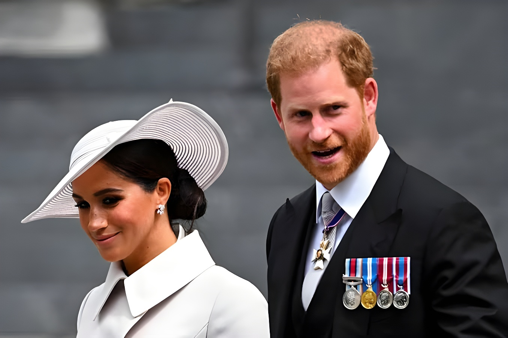

Le 20 août 2026, plusieurs médias britanniques et américains ont révélé que le duc et la duchesse de Sussex s'apprêtaient à revenir vivre au Royaume-Uni avec leurs enfants Archie et Lilibet, six ans après avoir quitté leurs fonctions royales pour s'installer en Californie. Le couple s'installera dans une résidence privée, hors de tout cadre royal officiel, alors que leurs enfants doivent intégrer une école britannique dès la rentrée de septembre.
C'est le Daily Telegraph qui a révélé le premier, le 19 août 2026, que le prince Harry et Meghan Markle avaient décidé de revenir vivre au Royaume-Uni, une information rapidement confirmée par plusieurs autres titres, dont la BBC, CNN et le Washington Post. Le couple, installé en Californie depuis 2020, doit s'établir dans une résidence privée située en dehors de Londres, dont l'adresse n'a pas été communiquée pour des raisons de sécurité.
Ni le couple ni le palais de Buckingham n'ont commenté officiellement l'information dans un premier temps. Interrogé sur le sujet lors d'un événement à Washington, le prince Harry s'est contenté de répondre qu'il n'avait « rien à dire », selon l'agence Associated Press.
Selon plusieurs sources proches du couple citées par la BBC et NPR, Archie, 7 ans, et Lilibet, 5 ans, sont déjà inscrits dans un établissement scolaire britannique et doivent y commencer les cours dès la rentrée de septembre 2026, Archie en Year 3 et Lilibet en Year 1. L'école concernée n'a pas été révélée, toujours pour des motifs de sécurité et de protection de la vie privée des enfants.
Le couple ne revient pas pour reprendre un rôle de membres actifs de la famille royale. Meghan Markle doit continuer à diriger depuis le Royaume-Uni sa marque de produits lifestyle As Ever, tandis que le prince Harry compte consacrer davantage de temps à ses œuvres caritatives basées dans le pays, notamment la fondation Invictus Games, dont le prochain tournoi doit se tenir à Birmingham en 2027. Selon les informations de GB News, ni le duc ni la duchesse ne percevront de fonds publics pendant leur séjour, et le couple conserverait à la fois sa propriété de Montecito, en Californie, et un bien immobilier au Portugal.
Le retour de la famille relance immédiatement la question de la protection policière du couple, un contentieux vieux de plusieurs années. Le prince Harry avait perdu, en mai 2025, son appel devant la Cour d'appel visant à faire rétablir automatiquement une protection policière financée par l'État, retirée après son retrait de la vie royale active en 2020. La décision revient au Ravec (Royal and VIP Executive Committee), qui réunit des représentants du Home Office, de la Metropolitan Police et de la Maison royale.
Ce déménagement intervient après plusieurs signes de réchauffement entre le prince Harry et son père. En juillet 2026, le duc de Sussex a rencontré le roi Charles III et la reine consort Camilla lors d'une réunion familiale à Highgrove House, un peu plus d'un an après une première entrevue privée organisée à Clarence House début 2024. Selon des propos rapportés par le magazine People, le souverain aurait été informé du projet de retour de son fils quelques jours avant l'annonce publique et se réjouirait de pouvoir passer davantage de temps avec ses petits-enfants, loin des projecteurs. La relation entre le prince Harry et son frère, le prince William, reste en revanche toujours marquée par une estrangement durable, sans signe public de rapprochement à ce stade.
Le prince Harry et Meghan Markle annoncent leur retrait des fonctions royales actives (« Megxit »).
Le prince Harry perd son appel visant à faire rétablir sa protection policière automatique au Royaume-Uni.
Le Ravec rejette une demande de sécurité financée par l'État pour la visite estivale de la famille.
Le prince Harry retrouve le roi Charles III et la reine Camilla lors d'une réunion familiale à Highgrove.
La presse britannique et américaine révèle le retour prochain du couple avec Archie et Lilibet.
Archie et Lilibet doivent faire leur rentrée dans une école britannique.
« La sécurité du prince Harry et de Meghan Markle à leur retour au Royaume-Uni est une question privée. »
— Andy Burnham, Premier ministre britannique, août 2026Au-delà de l'agenda personnel du couple, ce retour marque une étape symbolique dans la longue saga entamée par le « Megxit » de 2020. Il ne s'agit pas d'un retour à la vie royale institutionnelle : Harry et Meghan reviennent comme deux citoyens privés, sans reprendre d'engagements publics au nom de la Couronne, mais leur installation durable sur le sol britannique remet mécaniquement sur la table les questions les plus sensibles de leur relation avec la famille royale, à commencer par leur protection policière et la place qu'occuperont Archie et Lilibet dans la vie publique du pays. Reste à savoir si ce rapprochement géographique s'accompagnera d'un rapprochement plus large avec le reste de la famille, à un moment où le roi Charles III poursuit son traitement contre le cancer et où la question de la succession reste, en toile de fond, très surveillée par les médias britanniques.
On 20 August 2026, several British and American outlets reported that the Duke and Duchess of Sussex were preparing to move back to the United Kingdom with their children, Archie and Lilibet, six years after stepping back from royal duties to settle in California. The couple will live in a private residence outside any official royal setting, with their children set to start at a British school in September.
The Daily Telegraph was first to report, on 19 August 2026, that Prince Harry and Meghan Markle had decided to move back to the United Kingdom, news quickly confirmed by several other outlets including the BBC, CNN and the Washington Post. The couple, based in California since 2020, are set to settle in a private residence outside London, with the address withheld for security reasons.
Neither the couple nor Buckingham Palace initially commented officially on the reports. Asked about the story at an event in Washington, Prince Harry simply said he had "nothing to say," according to the Associated Press.
According to several sources close to the couple cited by the BBC and NPR, Archie, 7, and Lilibet, 5, are already enrolled at a British school and are due to start classes in September 2026, with Archie entering Year 3 and Lilibet Year 1. The school has not been named, again for security and privacy reasons.
The couple are not returning to resume active roles within the royal family. Meghan Markle is expected to keep running her lifestyle brand As Ever from the UK, while Prince Harry plans to spend more time on his UK-based charities, including the Invictus Games Foundation, whose next games are due to take place in Birmingham in 2027. According to GB News, neither the Duke nor the Duchess will receive public funds during their stay, and the couple are reportedly keeping both their Montecito, California property and a home in Portugal.
The family's return immediately reopens the question of the couple's police protection, a dispute that has run for several years. Prince Harry lost his Court of Appeal challenge in May 2025 to have automatic, state-funded police protection reinstated, after it was withdrawn when he stepped back from active royal duties in 2020. The decision rests with the Royal and VIP Executive Committee (RAVEC), which includes representatives from the Home Office, the Metropolitan Police and the Royal Household.
The move follows several signs of a thaw between Prince Harry and his father. In July 2026, the Duke of Sussex met King Charles III and Queen Camilla at a family gathering at Highgrove House, just over a year after a first private meeting at Clarence House in early 2024. According to People magazine, the King was informed of his son's plans to return a few days before the public announcement and is said to welcome the chance to spend more time with his grandchildren, away from the spotlight. Prince Harry's relationship with his brother, Prince William, however, remains marked by a lasting estrangement, with no public sign of reconciliation so far.
Prince Harry and Meghan Markle announce they are stepping back from active royal duties ("Megxit").
Prince Harry loses his appeal to have automatic UK police protection reinstated.
RAVEC rejects a request for state-funded security for the family's summer visit.
Prince Harry reunites with King Charles III and Queen Camilla at a family gathering at Highgrove.
British and US media reveal the couple's upcoming return with Archie and Lilibet.
Archie and Lilibet are due to start at a British school.
"Security for Prince Harry and Meghan on their return to the UK is a private matter."
— Andy Burnham, UK Prime Minister, August 2026Beyond the couple's personal plans, the move marks a symbolic milestone in the long saga that began with the 2020 "Megxit." This is not a return to institutional royal life: Harry and Meghan are coming back as private citizens, without resuming public duties on behalf of the Crown, but their lasting settlement on British soil inevitably reopens the most sensitive issues in their relationship with the royal family, starting with police protection and the place Archie and Lilibet will occupy in the country's public life. Whether this geographic rapprochement will be matched by a broader reconciliation with the rest of the family remains an open question, at a time when King Charles III continues his cancer treatment and the issue of succession remains, in the background, closely watched by the British press.